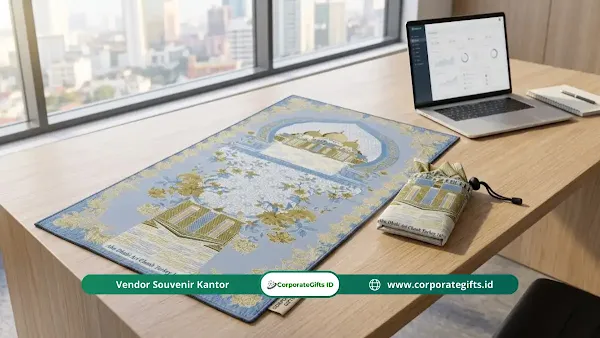

Corporate Gifts ID - Sajadah travel custom adalah alas sholat lipat berbahan poliester tahan air yang desain motif, logo korporat, atau nama penerima bisa dicetak khusus sesuai pesanan. Produk ini sangat cocok menjadi souvenir halalbihalal kantor karena berbobot ringan, praktis dibawa bepergian, digunakan setiap hari, dan menampilkan identitas perusahaan secara profesional nan elegan.
Pernahkah Anda atau karyawan Anda merasa kebingungan mencari alas sujud yang bersih dan memadai saat bertugas di luar kota? Bayangkan seorang profesional sedang berada di tengah padatnya mobilitas kerja atau perjalanan dinas di luar ruangan: waktu ibadah tiba, namun tempat sholat umum terbatas atau kurang bersih. Membawa sajadah kain tebal konvensional tentu sangat memakan ruang tas kerja.
Oleh karena itu, tren perlengkapan ibadah ringkas terus meningkat pesat. Memilih sajadah lipat saku sebagai cenderamata silaturahmi bukan sekadar memberi benda fisik, melainkan menyediakan sarana ibadah yang menemani langkah harian mitra kerja Anda. Ulasan ini mengupas tuntas spesifikasi bahan, keunggulan branding, profil penerima, hingga panduan praktis pengadaannya.
Poin Kunci Sajadah Travel Custom Halalbihalal:
- Portabilitas Maksimal: Berukuran saku saat dilipat rapi ke dalam pouch resleting atau kantong serut mini, tidak membebani kompartemen tas laptop.
- Material Tahan Air (Water-Repellent): Bahan poliester Taslan/Ripstop menolak percikan air dan noda debu, sangat higienis untuk area outdoor maupun lantai publik.
- Lapisan Bawah Anti-Selip: Dilengkapi bintik karet mikro yang mencengkeram lantai marmer masjid atau kantor agar sujud tetap aman dan stabil.
- Personalisasi Sublimasi Permanen: Tinta cetak sublimasi menyatu ke pori-pori kain, menghasilkan warna motif tajam, tahan cuci berkali-kali, dan ramah kulit.
Apa Itu Sajadah Travel Custom?
Sajadah travel custom adalah alas sholat modern yang dirancang khusus dengan menitikberatkan pada aspek bobot yang sangat ringan, ketahanan bahan terhadap kelembapan, serta kemudahan proses melipat. Desain visual, ornamen geometris Islam modern, hingga penempatan logo instansi dapat dikustomisasi secara leluasa berkat hadirnya teknologi cetak tekstil digital modern.
- Fungsional dan Ringkas: Saat dibuka, sajadah ini memiliki ukuran standar yang nyaman untuk postur orang dewasa. Namun saat dilipat, ukurannya menciut hingga seukuran telapak tangan dan tersimpan rapi dalam pouch bawaan.
- Desain Bebas Personalisasi: Anda dapat mencetak logo perusahaan secara bersahaja (subtle branding), menyisipkan pesan mutiara hikmah, bahkan membubuhkan nama individual karyawan pada setiap lembar sajadah.
- Material Tangguh untuk Mobilitas Tinggi: Berbeda dari sajadah karpet beludru yang menyerap debu jalanan, bahan sintetis poliester memiliki kerapatan serat tinggi yang menolak cairan serta sangat cepat kering setelah dicuci.
- Instrumen Branding Berkelanjutan: Menjadi bagian penting dalam tren souvenir halalbihalal kantor 2026 karena frekuensi pemakaiannya yang tinggi menjamin daya ingat merek secara berkesinambungan.
Mengapa Sajadah Travel Custom Cocok untuk Souvenir Halalbihalal?
Halalbihalal adalah tradisi luhur silaturahmi pasca-Idul Fitri yang bernuansa hangat, religius, dan penuh rasa syukur. Memberikan souvenir bertema ibadah sangat selaras dengan suasana spiritual tersebut dibanding sekadar memberikan cenderamata pajangan yang rawan terlupakan di laci kantor.
Tujuan Utama Pemesanan bagi Korporat
- Media Branding Korporat yang Menyentuh Emosi: Memberikan perlengkapan ibadah menunjukkan kepedulian perusahaan terhadap keseimbangan spiritual karyawan dan rekanan bisnis Anda.
- Bingkisan Eksklusif Acara Silaturahmi: Sangat pas disandingkan dalam paket gift set bersama tas custom souvenir halalbihalal atau tumbler insulasi untuk acara gathering akbar kantor.
- Oleh-Oleh Haji, Umroh, & Syukuran Keluarga: Kerap dipesan oleh pimpinan perusahaan atau perorangan sebagai cenderamata tasyakuran haji, pengajian akbar, atau haul keluarga besar.
- Penyatu Rasa Kebersamaan Tim: Motif seragam dengan identitas instansi menumbuhkan rasa bangga dan persaudaraan saat seluruh anggota tim menunaikan ibadah sholat berjamaah bersama.
Manfaat Utama bagi Kenyamanan Pengguna
- Kepraktisan Mobilitas Tanpa Beban: Bobot sajadah ini rata-rata di bawah 150 gram, membuatnya mudah diselipkan ke saku celana, tas jinjing kerja, maupun dashboard mobil pribadi.
- Jaminan Higienitas di Ruang Publik: Memberikan batas sujud pribadi yang bersih dari bakteri lantai mushola umum, bandara, atau stasiun kereta api yang ramai dilewati ribuan orang.
- Mendukung Kekhusyukan Beribadah: Area personal yang terbentang bersih membantu menjaga konsentrasi sujud meski sedang berada di lorong darurat transit atau area peristirahatan rest area jalan tol.
Tabel Spesifikasi Bahan & Karakteristik Sajadah Travel Korporat
Untuk memastikan tim pengadaan logistik perusahaan memilih spesifikasi terbaik, berikut perbandingan mendalam karakteristik teknis sajadah travel custom:
| Komponen Produk | Spesifikasi Material | Karakter & Keunggulan | Rekomendasi Paket |
|---|---|---|---|
| Lapisan Atas (Sujud) | Polyester Taslan / Satin Silk Lembut | Halus menyentuh kulit kening, water-repellent, cetak warna tajam | Paket Premium & Souvenir VIP Eksekutif |
| Lapisan Bawah (Alas) | Anti-Slip Dotted Fabric / Bintik Karet | Mencengkeram lantai keramik licin, tidak bergeser saat sujud | Standar Wajib Seluruh Pesanan Korporat |
| Teknologi Pewarnaan | Full Print Digital Sublimation | Tinta meresap permanen, tidak mengelupas, ramah lingkungan | Desain Motif Floral & Geometris Custom |
| Pouch Kemasan | Pouch Resleting Zipper / Tali Serut | Dilengkapi gantungan karabiner mini, sangat rapi dan praktis | Paket Bundling Gathering Akbar |

Pouch penyimpanan sajadah travel dapat disematkan logo korporat, nama personal penerima, dan ornamen senada.
Apa Saja Karakteristik Unggulan Sajadah Travel Custom?
Kualitas sajadah travel ditentukan oleh keunggulan empat pilar manufaktur: formula kain anti-air, cengkeraman anti-selip, kecerahan tinta sublimasi, dan presisi jahitan tepi (finishing overdeck / rumbai).
Lapis Atas Tahan Air (Water-Repellent)
Permukaan kain poliester khusus diproses dengan lapisan hydrophobic. Tetesan air atau cairan teh yang tidak sengaja tumpah di atas sajadah akan membentuk butiran seperti air di atas daun talas, sehingga tidak meresap dan cukup diseka menggunakan tisu bersih.
Lapis Bawah Anti Selip (Anti-Slip Grip)
Kelemahan sajadah travel murahan adalah hanya terdiri dari satu lapis kain tipis yang mudah tergelincir di lantai marmer masjid. Model dua lapis berkualitas tinggi menyertakan kain bintik karet mikro di bagian bawah, memberikan stabilitas maksimal saat sujud dan bangkit berdiri.
Teknik Cetak Sublimasi Warna Permanen
Berbeda dengan sablon manual yang kaku dan mudah retak, cetak sublimasi digital mentransfer pigmen warna ke dalam serat molekul kain menggunakan panas tinggi. Hasilnya adalah motif artistik bernuansa Nusantara atau Timur Tengah dengan gradasi warna yang sangat kaya, awet, dan tetap lembut disentuh.
Pouch Penyimpanan Ergonomis & Estetis
Setiap unit sajadah travel dilengkapi pouch pelindung yang dirancang pas dengan lipatan sajadah. Tipe pouch zipper dengan resleting besi memberikan proteksi kedap debu, sementara model tali serut (drawstring) memungkinkan proses buka-lipat super kilat dalam hitungan detik.
Siapa Saja Target Penerima Sajadah Travel Custom?
Keserbagunaan sajadah lipat menjadikannya hadiah yang universal dan sangat dihargai oleh berbagai segmen demografis:
- Karyawan Kantor & Profesional Muda: Sangat relevan bagi pekerja kantoran yang sering berpindah ruang meeting, bekerja secara remote di kafe (work from cafe), atau pekerja dinas lapangan.
- Klien Strategis & Mitra Korporat VIP: Dikemas dalam kotak hardbox eksklusif dengan selipan kartu ucapan selamat Idul Fitri, memancarkan wibawa dan rasa hormat yang mendalam.
- Keluarga Besar & Jamaah Pengajian: Menjadi buah tangan yang merekatkan ikatan tali kasih antar-kerabat perantauan saat berkumpul dalam momen silaturahmi akbar hari raya.
- Peserta Seminar & Donatur Komunitas: Karena bobotnya ringan dan kemasannya ringkas, panitia dapat mendistribusikannya secara tertib kepada ratusan hingga ribuan peserta tanpa kendala logistik.
Bagaimana Tips Cerdas Memilih Vendor Sajadah Travel Custom?
Agar pengadaan souvenir halalbihalal instansi Anda berjalan lancar tanpa kendala keterlambatan atau penurunan mutu barang, perhatikan kiat-kiat seleksi vendor berikut:
- Verifikasi Proofing Sampel Fisik: Mintalah vendor mengirimkan sampel produk asli (physical dummy proof) untuk menguji kelembutan bahan, kekuatan jahitan tepi, dan ketajaman hasil cetak sebelum menyetujui cetak massal.
- Terapkan Desain Elegan (Subtle Branding): Hindari mencetak logo perusahaan berukuran raksasa di tengah sajadah karena dapat mengganggu kekhusyukan sholat. Letakkan logo berdimensi manis di sudut bawah sajadah atau fokuskan branding utama pada kantong pouch.
- Perhatikan Timeline Produksi: Jadwalkan pesanan minimal 3 hingga 4 pekan menjelang jadwal acara halalbihalal untuk mengantisipasi kepadatan antrean produksi workshop dan lalu lintas ekspedisi kargo pasca-lebaran.
- Legalitas dan Transparansi B2B: Pastikan vendor memiliki badan usaha resmi yang mampu menerbitkan faktur pajak elektronik, nota resmi perusahaan, serta perjanjian tenggat waktu pengiriman yang mengikat.
Kesimpulan: Investasi Souvenir Halalbihalal Penuh Berkah
Sajadah travel custom membuktikan bahwa bingkisan korporat dapat memadukan keindahan estetika visual modern dengan keluhuran nilai spiritualitas. Di era mobilitas kerja yang serba cepat, menghadiahkan perlengkapan ibadah portabel adalah cerminan empati nyata perusahaan terhadap kenyamanan batiniah seluruh staf dan mitra bisnis.
Wujudkan pengadaan sajadah travel custom halalbihalal perusahaan Anda bersama Corporate Gifts ID. Didukung tim desain grafis berpengalaman, fasilitas workshop mesin sublimasi modern, dan katalog material lengkap, kami siap membantu menghadirkan cenderamata terbaik yang berkesan mendalam.
Pertanyaan Seputar Sajadah Travel Custom (FAQ)

Ditulis oleh: Arinda Zakia
Senior Corporate Gifting SpecialistSenior Corporate Gifting Specialist di CorporateGifts.ID dengan pengalaman lebih dari 8 tahun dalam kurasi bingkisan korporat, hampers hari raya, dan merchandise promosi premium untuk berbagai instansi BUMN dan multinasional.
Lihat Profil Lengkap & Panduan Lainnya